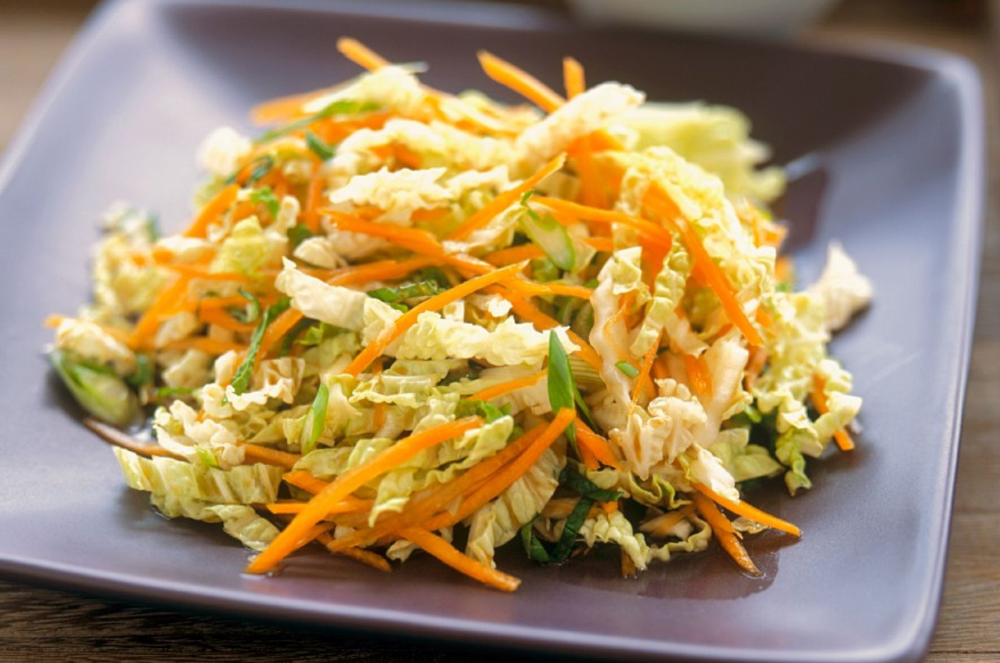
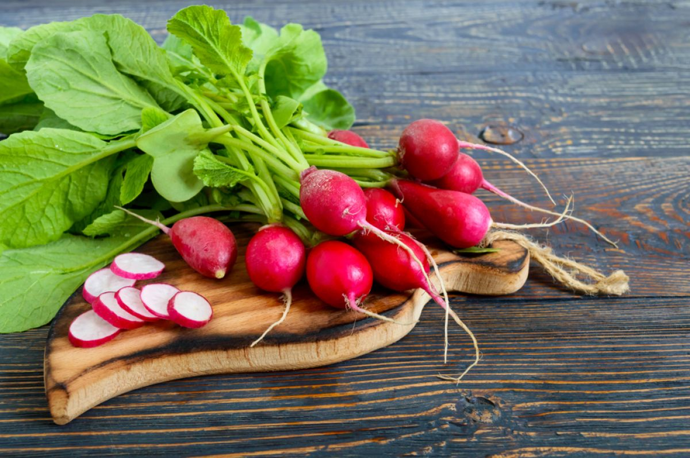
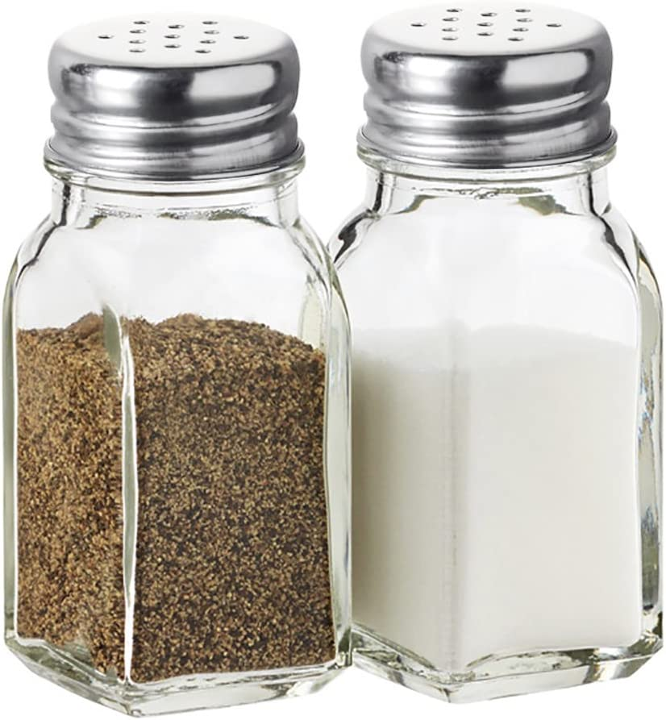

Korean carrot, chicken and Chinese cabbage salad

Most recipes for salads from Peking cabbage with Korean carrots and fresh cucumber are easy to prepare:
it is enough to cut the ingredients and mix them in a salad bowl. Liquid seasoning for such a snack can
serve as mayonnaise, as well as more useful products – sour cream, natural yogurt, vegetable oil or
original
This is the simplest and fastest version of this salad. And it is also very useful, because it contains
ingredients rich in vitamins and other useful substances
Named so because it's made from shredded cabbage, like a traditional Coleslaw, but other than that, it
couldn't be more different! Without the oily mayonnaise dressing, this Asian salad is fresh, bright and
crisp, but certainly not devoid of flavor.
Preparation:
To prepare this simple, quick and delicious salad, we will need the following ingredients: Peking
cabbage, Korean carrots, fresh cucumbers, chicken breast, mayonnaise, salt and ground black pepper.
We put the chicken breast to cook (or fillet from the hips, for example, if you want - 350 grams). In
general, there are two basic rules according to which it is customary to cook it. If you need broth, the
meat is put in cold water, and when you cook the breast itself (for example, for the same salads), put
it in boiling water. Then the breast will turn out juicy and very soft, since it will not have time to
give all its juices to the broth. Thus, we put the breast in boiling water and cook at a moderate boil
for about 15 minutes (after the water boils for the second time - the boiling stops when you lay the
meat, as the water temperature decreases). However, it is important to understand that the cooking time
depends on the size of the piece or pieces.
Cucumbers (300 grams are two rather large fruits) are washed, dried and cut into thin cubes.
When the breast is cooked, we take it out of the broth and let the meat cool down. The broth is also
used for cooking the first dishes.
Ingredients

Boiled chicken breast
400g

Salt,Seasame,Pepper
by taste
Reviews
Joanne Colon
Liked the salad. Korean carrot goes well with chicken.
Rachel Williams
Cooked quickly. My family loved the salad. Thanks
Louise Taylor
Good salad I advise to cook